Créateur
Style, paroles, mode de planification, décodeur, LoRA sur une route du vert au rouge ; la prise avec sa partition, ses graines et tout pour la refaire.
Un studio complet autour de YuE2, le modèle de chanson ouvert. Écris le style et les paroles, et le studio compose, chante et rend la chanson sur ton propre GPU. Tes chansons, tes mots et tes réglages n'en sortent jamais.
2.0.0 · la première version stable · octobre 2026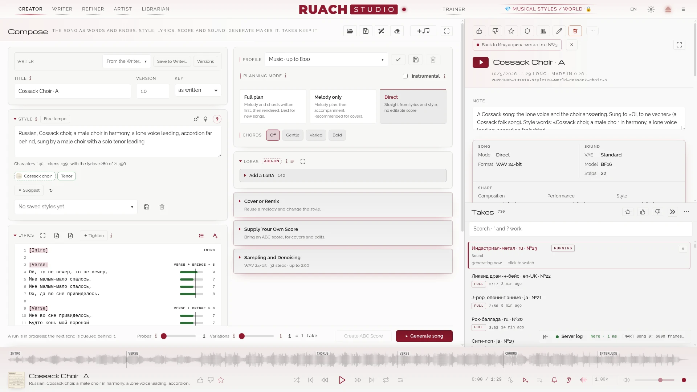
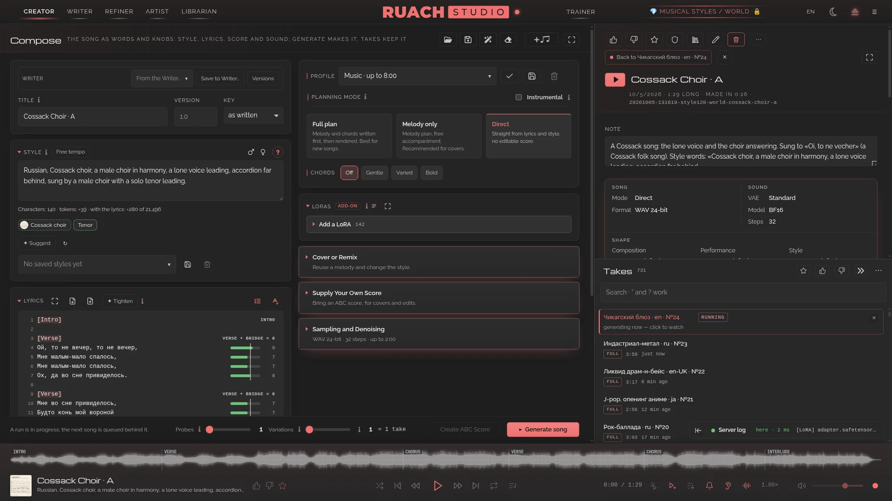
Ruach Studio, c'est la génération musicale ouverte qui tourne sur ton propre matériel : le modèle, la partition, les adaptateurs et chaque prise restent à toi, et rien ne se loue au jeton. Les modèles ouverts sont désormais assez bons pour tenir seuls, et ce qui manquait, c'est le studio autour d'eux : c'est ce que nous construisons, au grand jour.
La musique doit être libre à créer et à partager : qui n'a ni voix, ni instrument, ni studio a tout de même le droit de poser ses pensées et ses sentiments sur le son.
Le Créateur fait la chanson, l'Écrivain l'écrit avec un modèle de chat, l'Affineur la termine, le Peintre peint ses images, le Bibliothécaire garde chaque prise, et l'Entraîneur LoRA apprend tes propres chansons à YuE2. Un guide pour chaque salle se trouve dans le studio.
Style, paroles, mode de planification, décodeur, LoRA sur une route du vert au rouge ; la prise avec sa partition, ses graines et tout pour la refaire.
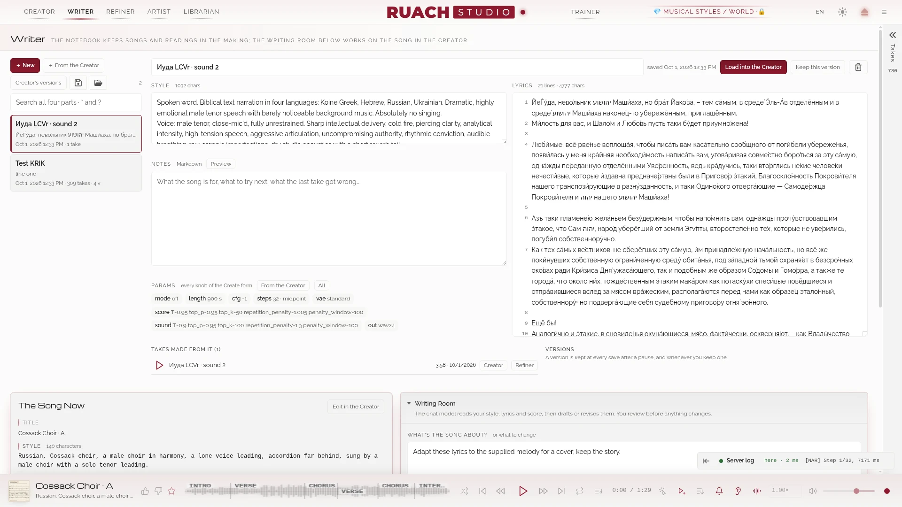
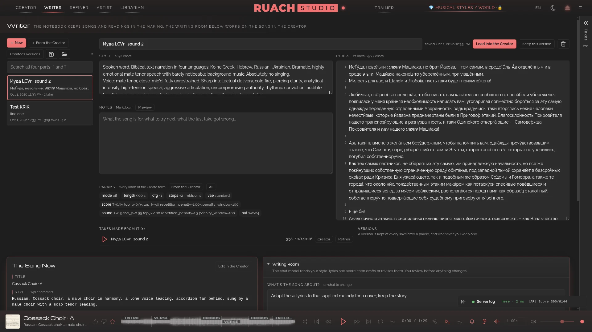
Des chansons comme documents avec leurs versions, des profils de texte et un modèle de chat à toi (ou OpenRouter) qui ébauche et révise avec toi.
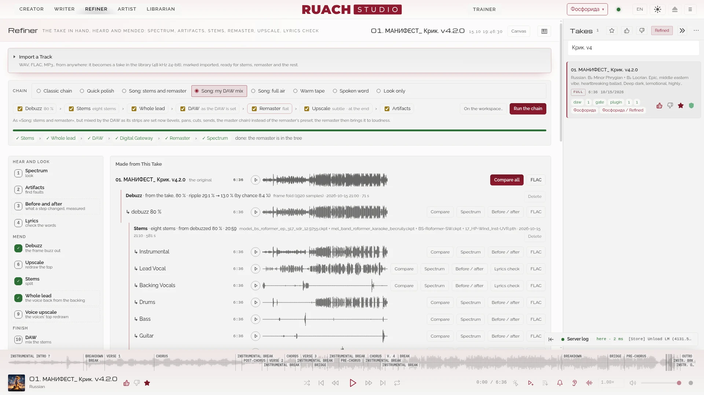
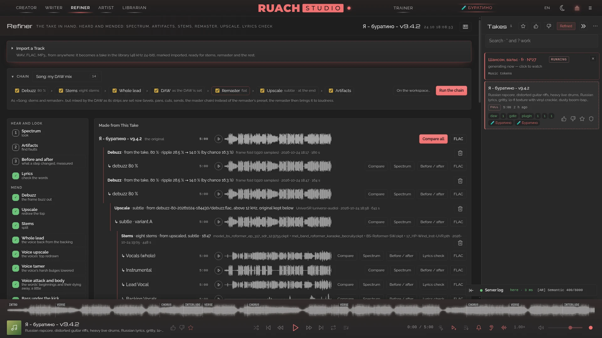
Spectre, artefacts, antibourdon, contrôle des paroles par Whisper, pistes séparées, remastering, suréchantillonnage ; une seule chaîne les enchaîne tous.
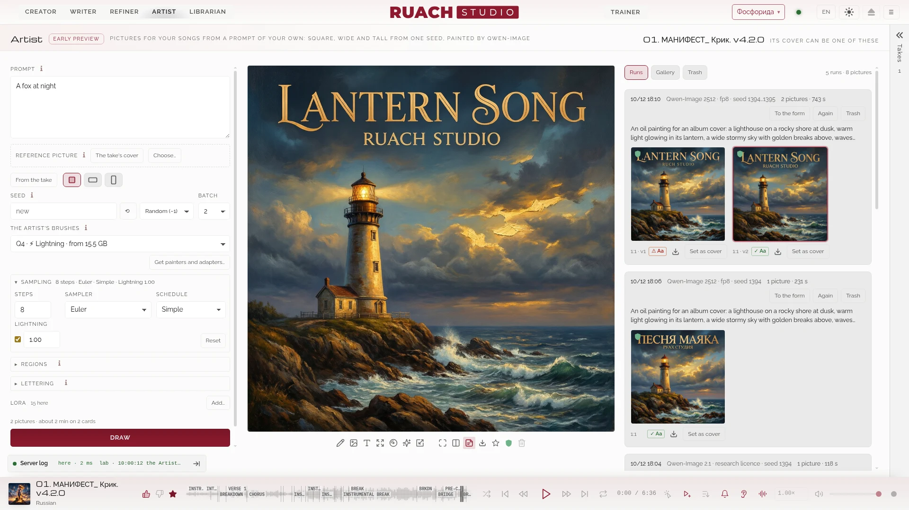
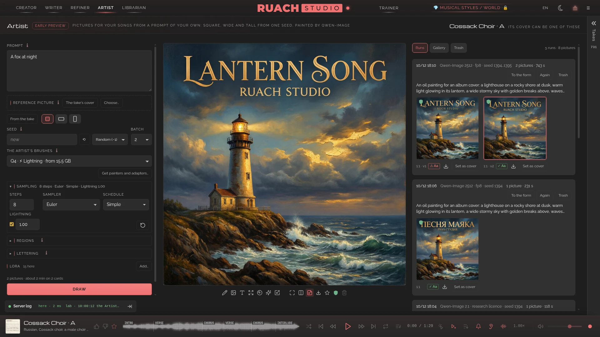
Des images pour tes chansons à partir d'un prompt à toi : carrée, large et haute d'une seule graine, peintes par Qwen-Image 2512 ; l'image se révèle sous tes yeux, et une carrée devient la pochette de la prise. Un premier aperçu.
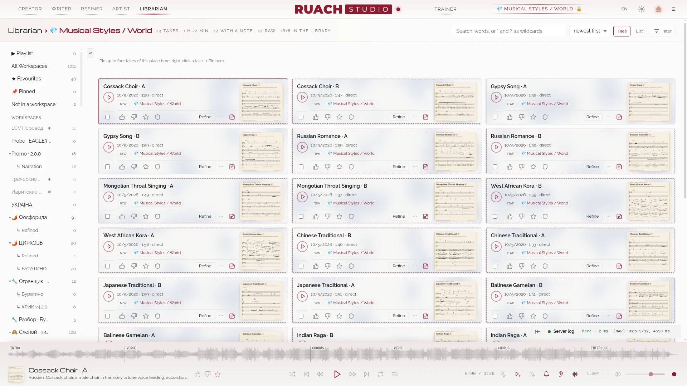
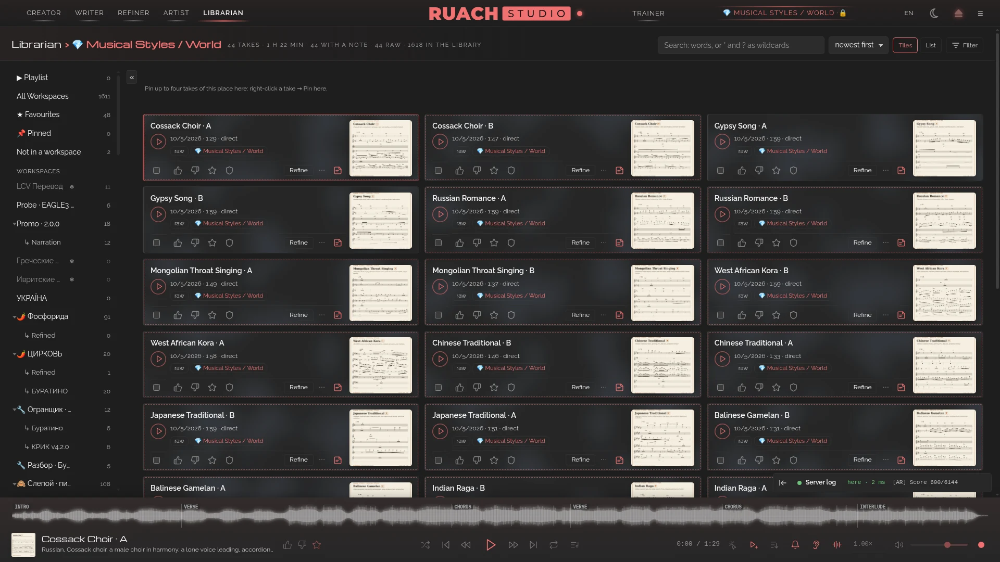
Chaque prise dans des espaces : cherchée, aimée, annotée, verrouillée, illustrée, envoyée vers ta DAW ; une corbeille qui rend.
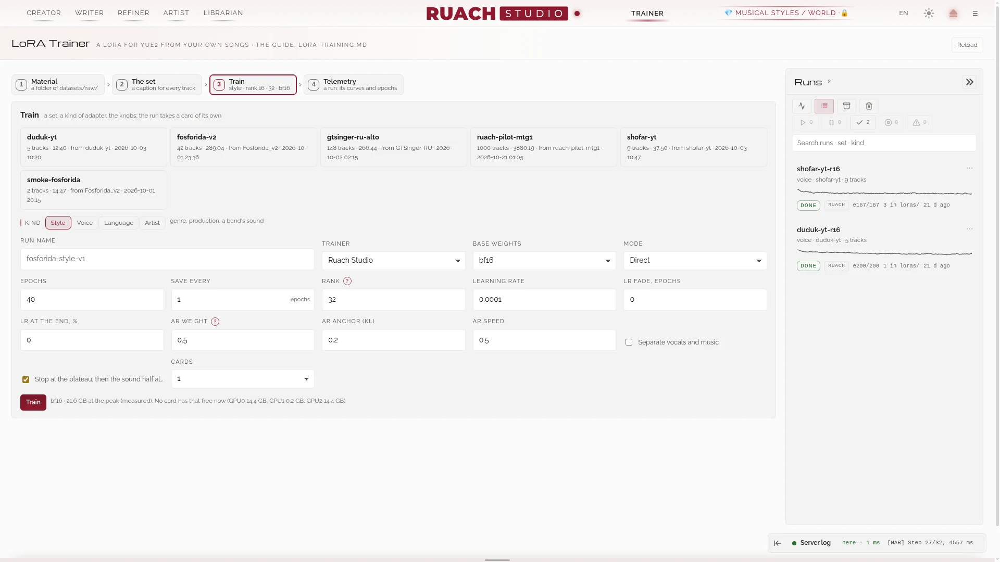
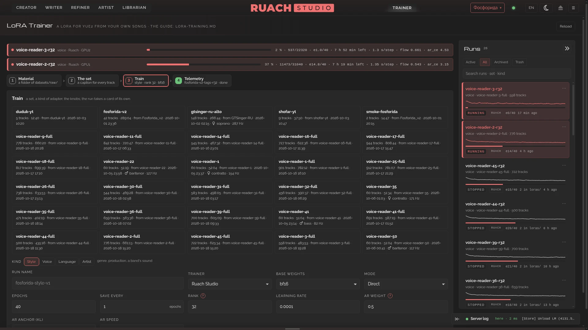
Des adaptateurs tirés de tes propres chansons : l'ensemble, l'entraînement, les courbes des deux moitiés expliquées, les époques à écouter en premier.
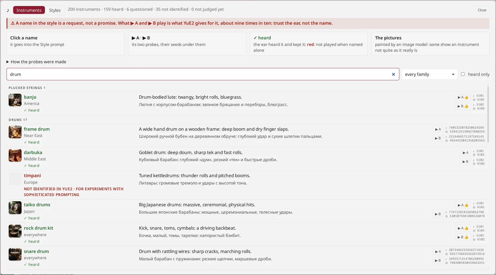
200 instruments sondés et jugés à l'oreille : ce que YuE2 joue vraiment, ce qu'il joue maigrement, ce qu'il ne connaît pas.
Pas une enveloppe de modèle de plus : un poste de travail autour du modèle, ouvert jusqu'à l'os, chaque changement numéroté et documenté.
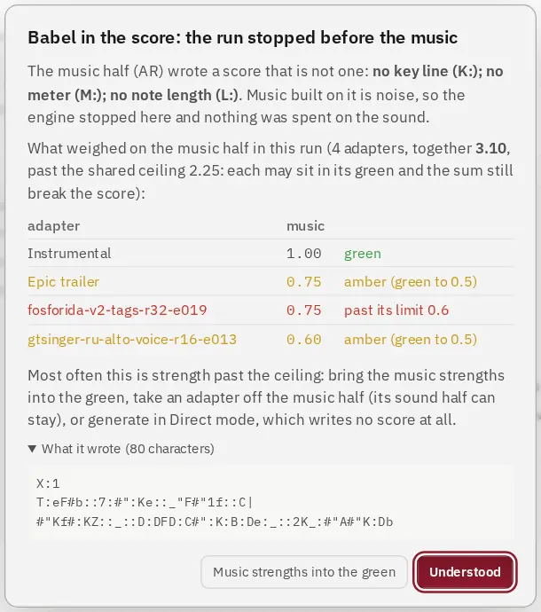
Quand la moitié musique écrit une partition cassée (des adaptateurs poussés trop loin font cela), le moteur arrête l'exécution avant qu'aucune musique ne soit bâtie dessus, en quelques secondes, et dit pourquoi : quels adaptateurs, à quelle distance de leurs limites, ce qui a été écrit.
Les forces se placent sur des routes mesurées ; les adaptateurs empilés partagent un plafond mesuré.
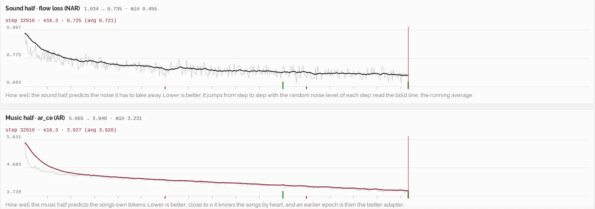
Le studio entraîne lui-même les adaptateurs, sur des poids bf16 non quantifiés. Face à AI-Toolkit d'Ostris sur le même ensemble, la perte de la moitié musique concorde époque par époque à 0.015 près.
Rang 16 sur 148 chansons : 2.1 s par pas dans 12 Go. Rang 32 sur 42 chansons entières : 6.7 s par pas dans 18 Go.
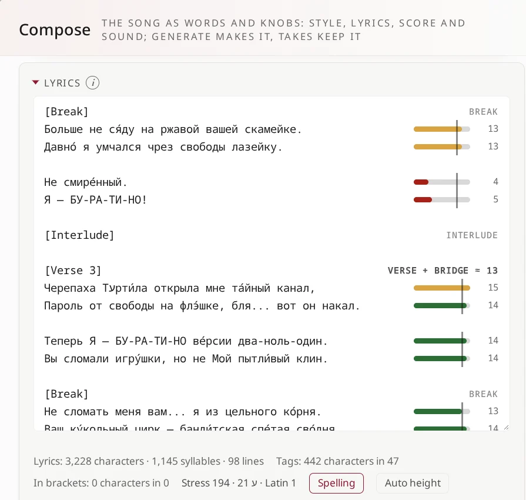
À côté de chaque ligne, ses temps, face à la règle de sa section : couplet et pont un seul groupe, le pré-refrain et le refrain le leur. Une syllabe se compte selon les règles propres à chaque langue, et les consonnes qui prennent un temps à elles comptent aussi ; une pause ou un interlude dans une section n'ouvre pas de nouveau groupe.
Tape «[» au début d'une ligne et les balises de section te sont proposées, comme un éditeur de code propose ses mots. Les accents égarés sont repérés ; Ctrl+F cherche dans le seul champ.
Chaque semaine, une vidéo affirme qu'un modèle tue SUNO. Ceci n'est pas un modèle : c'est un poste de travail autour d'un modèle. Voici où il gagne, et où il ne gagne pas (encore).
| Rouah Studio (YuE2) | SUNO | |
|---|---|---|
| où il tourne | ton GPU ; tes chansons n'en sortent jamais | leur cloud |
| ce qu'il coûte | l'électricité | un abonnement et des crédits |
| la partition | écrite d'abord, montrée, modifiable, à toi (ABC, MIDI) | cachée |
| les paroles | une mesure à côté de chaque ligne : ses temps face à la règle de sa section, les syllabes selon les règles propres à chaque langue ; les balises de section proposées dès que tu tapes «[» | un champ de texte ; des paroles écrites pour toi sur demande |
| refaire une prise | exactement : deux graines que tu gardes | non |
| guidage (CFG) | deux, séparés : la poussée du style et la prise des paroles, chacun son CFG | un bouton Style Influence |
| remplacer une section | ses paroles rechantées entre les silences que trouve l'oreille, le reste de la prise gardé à l'échantillon près : la couture ne s'entend pas ; plusieurs sections d'un coup | Replace Section : dans nos essais presque jamais utilisable, les coutures s'entendent et la voix change |
| ton propre son | entraîner une LoRA sur tes chansons, dans le studio | pas d'entraînement |
| après le rendu | pistes séparées, antibourdon, remastering, suréchantillonnage, contrôle des paroles, tout en local | pistes séparées, dans le cloud |
| voir le son | le spectrogramme de toute la prise au-dessus du lecteur, en phase avec son onde : les sections, la brillance et le volume, le spectre et la note sous le pointeur | une forme d'onde |
| vers une DAW | un projet REAPER avec la partition, les sections et les paroles (expérimental) | pistes audio |
| le code | ouvert, chaque changement documenté | fermé |
| le poli dès la sortie de la boîte | moins : un mixage peut bourdonner (l'Antibourdon aide), les paroles peuvent dériver (le contrôle des paroles trouve où), certains instruments YuE2 les joue maigrement ou pas du tout (une LoRA les lui apprend) | plus |
| ce qu'il faut | un GPU NVIDIA (24 Go pour tout en pleine précision), Linux, environ 33 Go de disque (environ 60 Go avec les modèles du Peintre) | un navigateur |
fetch-models.sh) ; les modèles du Peintre 26 Go de plus, les ensembles 💎 5 Go, chacun seulement quand tu le demandes2.0.0 est le studio où nous faisons nos propres chansons chaque jour. Voici les grandes pièces en route, pour 2.1.0 et après.
Viktor Zhuromskyy, the author of Ruach Studio, does not publish it for the hype. He made it for himself. After more than half a year of struggling with Suno on paid plans, and of searching for a model worth working with (ACE-Step, MiniMax and others), he set out to build an audio studio of his own, on his own machine. He settled on YuE2: of all the open models, it is the best value and the most refined.
He did not knock the studio together just to have something that runs. He built it his own way, because his work is his own: his translations, his interlinear texts and much more. He fit into it as much as he could, polished the interface as far as he could, and made working with it not poking and clicking among crutches and potholes, but as productive as it can be.
That is the whole story. Now the studio is yours as well.
Виктор Журомский, автор Ruach Studio, публикует её не ради хайпа. Он делал её для себя. После более чем полугода мучений с Suno на платных тарифах и поисков достойной модели (ACE-Step, MiniMax и другие) он взялся построить собственную аудиостудию, на своей машине. Выбор пал на YuE2: из всех открытых моделей она самая рентабельная и самая изысканная.
Студию он делал не тяп-ляп, лишь бы работало, а в своём стиле, потому что и работа у него своя: собственные переводы, подстрочники и многое другое. Он постарался вместить в неё максимум, отполировать интерфейс до блеска и сделать работу со студией не тыканьем и кликаньем среди костылей и ям, а по-настоящему продуктивной.
Вот и вся история. Теперь эта студия и ваша.
Віктор Журомський, автор Ruach Studio, публікує її не заради хайпу. Він робив її для себе. Після понад пів року мук із Suno на платних тарифах і пошуків гідної моделі (ACE-Step, MiniMax та інші) він узявся збудувати власну аудіостудію, на своїй машині. Вибір упав на YuE2: з усіх відкритих моделей вона найвигідніша й найвишуканіша.
Студію він робив не абияк, аби лиш працювало, а у своєму стилі, бо й робота в нього своя: власні переклади, підрядники та багато іншого. Він намагався вмістити в неї максимум, відшліфувати інтерфейс до блиску й зробити роботу зі студією не тицянням і клацанням серед милиць і ям, а справді продуктивною.
Ось і вся історія. Тепер ця студія і ваша.
Віктар Журомскі, аўтар Ruach Studio, публікуе яе не дзеля хайпу. Ён рабіў яе для сябе. Пасля больш як паўгода пакут з Suno на платных тарыфах і пошукаў годнай мадэлі (ACE-Step, MiniMax і іншыя) ён узяўся пабудаваць уласную аўдыястудыю, на сваёй машыне. Выбар упаў на YuE2: з усіх адкрытых мадэляў яна самая выгадная і самая вытанчаная.
Студыю ён рабіў не абы-як, абы працавала, а ў сваім стылі, бо і праца ў яго свая: уласныя пераклады, падрадкоўнікі і шмат іншага. Ён стараўся змясціць у яе максімум, адшліфаваць інтэрфейс да бляску і зрабіць працу са студыяй не тыцканнем і клікамі сярод мыліц і ям, а сапраўды прадуктыўнай.
Вось і ўся гісторыя. Цяпер гэтая студыя і ваша.
Ο Viktor Zhuromskyy, ο δημιουργός του Ruach Studio, δεν το δημοσιεύει για εντυπωσιασμό. Το έφτιαξε για τον εαυτό του. Ύστερα από περισσότερους από έξι μήνες ταλαιπωρίας με το Suno σε πληρωμένα πακέτα, και αναζήτησης ενός μοντέλου που να αξίζει (ACE-Step, MiniMax και άλλα), αποφάσισε να φτιάξει ένα δικό του στούντιο ήχου, στο δικό του μηχάνημα. Κατέληξε στο YuE2: από όλα τα ανοιχτά μοντέλα είναι το πιο συμφέρον και το πιο εκλεπτυσμένο.
Δεν έστησε το στούντιο πρόχειρα, απλώς για να δουλεύει. Το έφτιαξε με το δικό του ύφος, γιατί και η δουλειά του είναι δική του: οι μεταφράσεις του, τα διάστιχα κείμενά του και πολλά άλλα. Προσπάθησε να χωρέσει σε αυτό όσο περισσότερα γινόταν, να γυαλίσει το περιβάλλον εργασίας ως την τελευταία λεπτομέρεια και να κάνει τη δουλειά μαζί του όχι άσκοπα κλικ ανάμεσα σε δεκανίκια και λακκούβες, αλλά κάτι πραγματικά παραγωγικό.
Αυτή είναι όλη η ιστορία. Τώρα το στούντιο είναι και δικό σας.
Viktor Zhuromskyy, el autor de Ruach Studio, no lo publica para llamar la atención. Lo hizo para sí mismo. Tras más de medio año de sufrir con Suno en planes de pago y de buscar un modelo que mereciera la pena (ACE-Step, MiniMax y otros), se propuso construir su propio estudio de audio, en su propia máquina. Se quedó con YuE2: de todos los modelos abiertos, es el más rentable y el más refinado.
No montó el estudio de cualquier manera, solo para que funcionara. Lo hizo a su estilo, porque su trabajo también es suyo: sus traducciones, sus textos interlineales y mucho más. Procuró meter en él todo lo posible, pulir la interfaz hasta el último detalle y hacer que trabajar con el estudio no sea dar clics a ciegas entre muletas y baches, sino algo de verdad productivo.
Esa es toda la historia. Ahora el estudio también es tuyo.
Viktor Zhuromskyy, l'autore di Ruach Studio, non lo pubblica per fare clamore. Lo ha costruito per sé. Dopo più di sei mesi di tormenti con Suno sui piani a pagamento, e di ricerche di un modello all'altezza (ACE-Step, MiniMax e altri), ha deciso di crearsi uno studio audio tutto suo, sulla sua macchina. La scelta è caduta su YuE2: fra tutti i modelli aperti è il più conveniente e il più raffinato.
Non ha messo insieme lo studio alla buona, giusto perché funzionasse. Lo ha fatto a modo suo, perché anche il suo lavoro è suo: le sue traduzioni, i suoi testi interlineari e molto altro. Ha cercato di farci stare il massimo, di rifinire l'interfaccia fino all'ultimo dettaglio e di rendere il lavoro con lo studio non un cliccare a vuoto tra stampelle e buche, ma qualcosa di davvero produttivo.
Questa è tutta la storia. Ora lo studio è anche tuo.
Viktor Zhuromskyy, l'auteur de Ruach Studio, ne le publie pas pour faire parler de lui. Il l'a fait pour lui-même. Après plus de six mois à se débattre avec Suno sur des formules payantes, et à chercher un modèle qui en vaille la peine (ACE-Step, MiniMax et d'autres), il s'est mis à construire son propre studio audio, sur sa propre machine. Son choix s'est arrêté sur YuE2 : de tous les modèles ouverts, c'est le plus rentable et le plus raffiné.
Il n'a pas bricolé le studio à la va-vite, juste pour avoir quelque chose qui tourne. Il l'a fait à sa manière, parce que son travail est le sien : ses traductions, ses textes interlinéaires et bien plus encore. Il y a fait entrer tout ce qu'il a pu, a poli l'interface aussi loin qu'il a pu, et a fait du travail avec le studio non pas un tâtonnement de clics entre béquilles et nids-de-poule, mais quelque chose de vraiment productif.
Voilà toute l'histoire. Maintenant, le studio est aussi à toi.
Viktor Zhuromskyy, o autor do Ruach Studio, não o publica pelo hype. Ele o fez para si mesmo. Depois de mais de meio ano sofrendo com o Suno em planos pagos, e procurando um modelo que valesse a pena (ACE-Step, MiniMax e outros), ele decidiu construir o seu próprio estúdio de áudio, na sua própria máquina. A escolha caiu no YuE2: de todos os modelos abertos, é o de melhor custo-benefício e o mais refinado.
Ele não montou o estúdio de qualquer jeito, só para ter algo que rodasse. Fez do seu jeito, porque o trabalho dele é dele: as suas traduções, os seus textos interlineares e muito mais. Colocou nele o máximo que pôde, poliu a interface até onde pôde e fez do trabalho com o estúdio não um cutucar e clicar entre muletas e buracos, mas algo de fato produtivo.
Essa é a história toda. Agora o estúdio também é seu.
Viktor Zhuromskyy, der Autor von Ruach Studio, veröffentlicht es nicht für den Hype. Er hat es für sich selbst gemacht. Nach mehr als einem halben Jahr Mühe mit Suno in bezahlten Tarifen und der Suche nach einem Modell, mit dem sich arbeiten lässt (ACE-Step, MiniMax und andere), machte er sich daran, ein eigenes Audiostudio zu bauen, auf seiner eigenen Maschine. Die Wahl fiel auf YuE2: von allen offenen Modellen das lohnendste und das ausgefeilteste.
Er hat das Studio nicht zusammengeschustert, nur damit irgendetwas läuft. Er hat es auf seine Art gebaut, denn seine Arbeit ist seine eigene: seine Übersetzungen, seine Interlinearübersetzungen und vieles mehr. Er hat so viel hineingepackt, wie er konnte, die Oberfläche poliert, so weit er konnte, und die Arbeit damit nicht zu einem Stochern und Klicken zwischen Krücken und Schlaglöchern gemacht, sondern zu etwas wirklich Produktivem.
Das ist die ganze Geschichte. Jetzt ist das Studio auch deins.
Ruach Studio の作者 Viktor Zhuromskyy は、話題づくりのためにこれを公開しているのではありません。自分のために作ったのです。有料プランで Suno と半年以上格闘し、取り組むに値するモデルを探し回った末に（ACE-Step、MiniMax ほか）、彼は自分のマシンの上に自分だけのオーディオスタジオを作ろうと決めました。選んだのは YuE2 でした。オープンなモデルの中で、最も割に合い、最も洗練されているからです。
彼は、とりあえず動けばいいという作り方はしませんでした。自分の流儀で作りました。彼の仕事は彼自身のものだからです：自身の翻訳、行間対訳のテキスト、そのほか多くのもの。詰め込めるだけ詰め込み、磨けるだけインターフェースを磨き、スタジオでの作業を、松葉杖と穴ぼこの間を手探りでクリックすることではなく、本当に生産的なものにしました。
話はこれで全部です。これからは、このスタジオはあなたのものでもあります。
Ruach Studio 的作者 Viktor Zhuromskyy 发布它并不是为了炒作。他是为自己做的。在付费套餐上和 Suno 折腾了半年多，又四处寻找值得投入的模型（ACE-Step、MiniMax 等）之后，他决定在自己的机器上搭建一个属于自己的音频工作室。他选定了 YuE2：在所有开放模型中，它最划算，也最精致。
他没有随便拼凑一个能跑就行的工作室，而是按自己的方式来做，因为他的工作也是他自己的：他的译本、他的逐行对照文本，还有许多别的。他尽可能多地装进其中，把界面打磨到力所能及的极致，让用这个工作室工作不再是在拐杖和坑洼之间胡乱点击，而是真正高效的事。
故事就是这样。现在，这个工作室也是你的了。